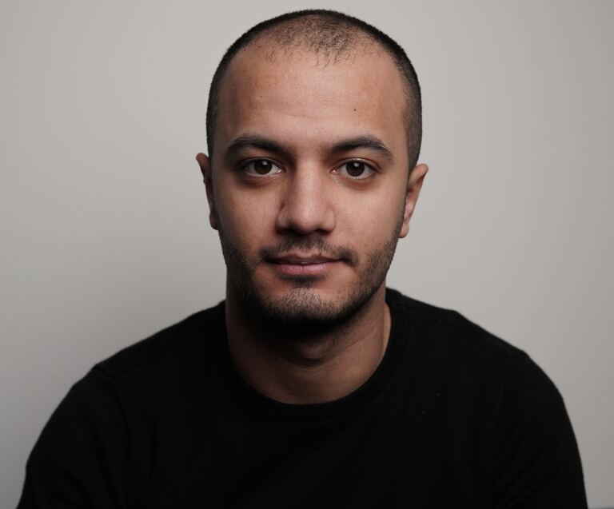

Since 2026 · Educational Arabic content
Explaining the hidden physics of Arab societies.
Hassan Hammoud is a Lebanese software engineer and Arabic-language educational content creator based in Berlin, Germany — previously at Facebook, currently at the German company Zalando. His YouTube channel (@HassanGPT) explains game theory, social psychology, and AI's relationship with the Arabic language to Arabic-speaking audiences. Since launching in 2026 it has passed 11,000 subscribers and 2 million total views across 21 videos (as of July 2026).

01 — About
Software engineer by day, content creator the rest of the time.
Every episode starts with a question and is built around a named mental model — a lens from economics, psychology, film, or anime. The goal: serious Arabic content about social issues, without preaching and without dumbing things down. Topics include game theory, Stockholm syndrome, cognitive biases like Dunning–Kruger and sunk cost, Arab identity, the relationship between religion and democracy, and why Arabic matters in the age of AI.
- Game theory
- Social psychology
- Cognitive biases
- Arab identity
- AI & the Arabic language
- Religion & democracy
- History
02 — Long-form videos (titles in Arabic; English gloss below each)
Long-form videos — 8 episodes.
- هل يتعارض الإسلام مع الديمقراطية؟ إيران ضد أميركا كمثالDoes Islam conflict with democracy? Iran vs. America as a case study15:33 · 9.1K views
- هل نحن شعب عاطفي أم أن الفقر يغيّر عقولنا؟Are we an emotional people, or does poverty change our minds?9:59 · 8.8K
- الهجوم على عمالقة الحرب الأهلية اللبنانيةAttack on Titan and the Lebanese civil war — the cycle of revenge9:06 · 5.8K
- لماذا تفشل رغم ذكائك؟ (ليس كسلاً)Why you fail despite being smart (it's not laziness)6:44 · 5.8K
- لو الهبوط على القمر كذبة.. لماذا لم تكشفه الاستخبارات السوفيتية؟If the moon landing were fake, why didn't Soviet intelligence expose it?6:18 · 2.9K
- لماذا عليك التخلي عن أحلامك بدل التعب من أجلهاWhy you should redefine your dreams instead of grinding for them6:34 · 479
- الذكاء الاصطناعي يواجه تحديًا.. والحل في اللغة العربية!AI faces a challenge — and Arabic is part of the answer (the Arabic data gap)5:34 · 457
- كيف تصنع أمريكا العباقرة من لا شيء؟How America manufactures geniuses from nothing7:44 · 375
View counts as of July 2026. The channel also publishes shorts — including its most-viewed video (2M+ views) — on YouTube.
03 — Contact